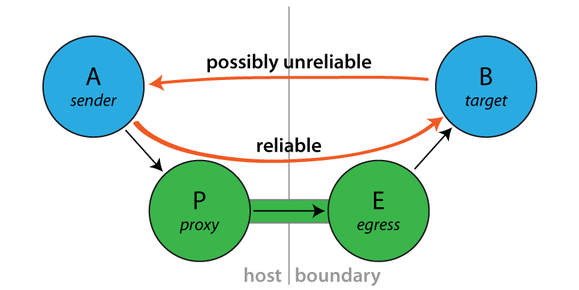

Reliable Proxy Pattern
Looking at Message Delivery Guarantees one might come to the conclusion that Akka actors are made for blue-sky scenarios: sending messages is the only way for actors to communicate, and then that is not even guaranteed to work. Is the whole paradigm built on sand? Of course the answer is an emphatic “No!”.
A local message send—within the same JVM instance—is not likely to fail, and if it does the reason was one of
- it was meant to fail (due to consciously choosing a bounded mailbox, which upon overflow will have to drop messages)
- or it failed due to a catastrophic VM error, e.g. an OutOfMemoryError, a memory access violation (“segmentation fault”, GPF, etc.), JVM bug—or someone calling System.exit().
In all of these cases, the actor was very likely not in a position to process the message anyway, so this part of the non-guarantee is not problematic.
It is a lot more likely for an unintended message delivery failure to occur when a message send crosses JVM boundaries, i.e. an intermediate unreliable network is involved. If someone unplugs an ethernet cable, or a power failure shuts down a router, messages will be lost while the actors would be able to process them just fine.
Note
This does not mean that message send semantics are different between local and remote operations, it just means that in practice there is a difference between how good the “best effort” is.
Introducing the Reliable Proxy
To bridge the disparity between “local” and “remote” sends is the goal of this pattern. When sending from A to B must be as reliable as in-JVM, regardless of the deployment, then you can interject a reliable tunnel and send through that instead. The tunnel consists of two end-points, where the ingress point P (the “proxy”) is a child of A and the egress point E is a child of P, deployed onto the same network node where B lives. Messages sent to P will be wrapped in an envelope, tagged with a sequence number and sent to E, who verifies that the received envelope has the right sequence number (the next expected one) and forwards the contained message to B. When B receives this message, the sender will be a reference to the sender of the original message to P. Reliability is added by E replying to orderly received messages with an ACK, so that P can tick those messages off its resend list. If ACKs do not come in a timely fashion, P will try to resend until successful.
Exactly what does it guarantee?
Sending via a ReliableProxy makes the message send exactly as reliable as if the represented target were to live within the same JVM, provided that the remote actor system does not terminate. In effect, both ends (i.e. JVM and actor system) must be considered as one when evaluating the reliability of this communication channel. The benefit is that the network in-between is taken out of that equation.
When the target actor terminates, the proxy will terminate as well (on the terms of Lifecycle Monitoring aka DeathWatch / Lifecycle Monitoring aka DeathWatch).
How to use it
Since this implementation does not offer much in the way of configuration, simply instantiate a proxy wrapping some target reference. From Java it looks like this:
import akka.contrib.pattern.ReliableProxy;
final ActorRef proxy = getContext().actorOf(
Props.create(ReliableProxy.class, target, Duration.create(100, "millis")));
public void onReceive(Object msg) {
if ("hello".equals(msg)) {
proxy.tell("world!", getSelf());
}
}
And from Scala like this:
import akka.contrib.pattern.ReliableProxy
system.actorSelection(node(remote) / "user" / "echo") ! Identify("echo")
target = expectMsgType[ActorIdentity].ref.get
proxy = system.actorOf(Props(classOf[ReliableProxy], target, 100.millis), "proxy")
proxy ! "hello"
Since the ReliableProxy actor is an FSM, it also offers the capability to subscribe to state transitions. If you need to know when all enqueued messages have been received by the remote end-point (and consequently been forwarded to the target), you can subscribe to the FSM notifications and observe a transition from state ReliableProxy.Active to state ReliableProxy.Idle.
final ActorRef proxy = getContext().actorOf(Props.create(ReliableProxy.class, target,
Duration.create(100, "millis")));
ActorRef client = null;
{
proxy.tell(new FSM.SubscribeTransitionCallBack(getSelf()), getSelf());
}
public void onReceive(Object msg) {
if ("hello".equals(msg)) {
proxy.tell("world!", getSelf());
client = getSender();
} else if (msg instanceof FSM.CurrentState<?>) {
// get initial state
} else if (msg instanceof FSM.Transition<?>) {
@SuppressWarnings("unchecked")
final FSM.Transition<ReliableProxy.State> transition =
(FSM.Transition<ReliableProxy.State>) msg;
assert transition.fsmRef().equals(proxy);
if (transition.to().equals(ReliableProxy.idle())) {
client.tell("done", getSelf());
}
}
}
From Scala it would look like so:
val proxy = context.actorOf(Props(classOf[ReliableProxy], target, 100.millis))
proxy ! FSM.SubscribeTransitionCallBack(self)
var client: ActorRef = _
def receive = {
case "go" ⇒ proxy ! 42; client = sender
case FSM.CurrentState(`proxy`, initial) ⇒
case FSM.Transition(`proxy`, from, to) ⇒ if (to == ReliableProxy.Idle)
client ! "done"
}
The Actor Contract
Message it Processes
- FSM.SubscribeTransitionCallBack and FSM.UnsubscribeTransitionCallBack, see FSM
- internal messages declared within ReliableProxy, not for external use
- any other message is transferred through the reliable tunnel and forwarded to the designated target actor
Messages it Sends
- FSM.CurrentState and FSM.Transition, see FSM
Exceptions it Escalates
- no specific exception types
- any exception encountered by either the local or remote end-point are escalated (only fatal VM errors)
Arguments it Takes
- target is the ActorRef to which the tunnel shall reliably deliver messages, B in the above illustration.
- retryAfter is the timeout for receiving ACK messages from the remote end-point; once it fires, all outstanding message sends will be retried.
Contents